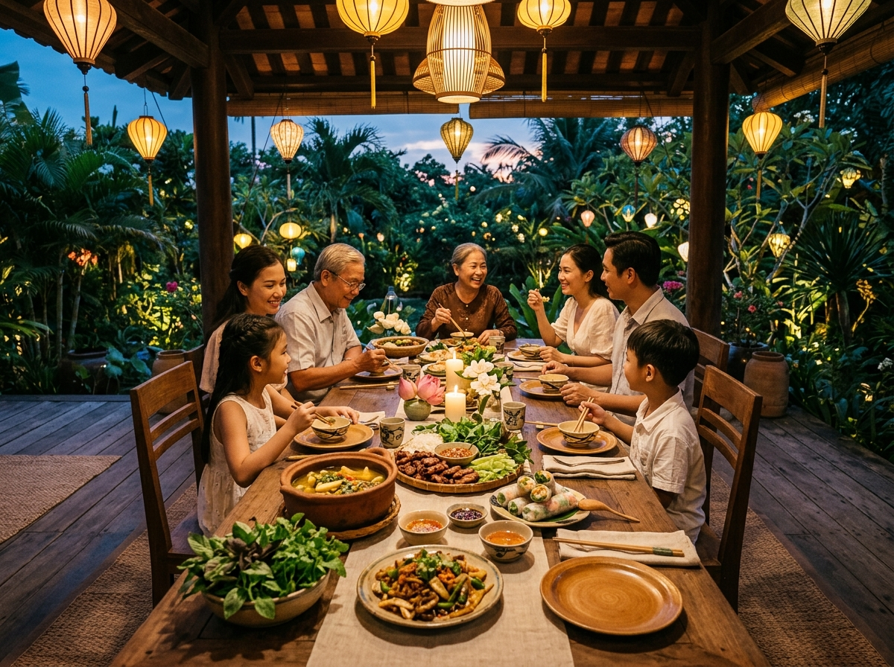

Tinh Hoa Ẩm Thực Hữu Cơ Khép Kín:
- Hệ sinh thái Farm-to-Table khép kín: Cánh đồng lúa hữu cơ lúa mùa ST25, vườn rau sạch Organic Garden, vườn thảo mộc gia vị bản địa, khu chăn thả trứng gà đồi và thủy sản tự nhiên hồ 100ha.
- Khoảng cách tính bằng bước chân: Nông sản được thu hoạch tươi mới mỗi sáng sớm, chuyển thẳng từ luống rau, đồng lúa đến bàn ăn chỉ trong vòng 30 - 60 phút, bảo toàn trọn vẹn enzym và dưỡng chất sống.
- Đặc quyền riêng cho gia chủ & khách lưu trú: Giỏ quà nông sản hữu cơ giao tận hiên nhà mỗi ngày, dịch vụ Bếp trưởng riêng phục vụ Chef’s Table, tiệc nướng giữa cánh đồng lúa chín và trà chiều bên đầm sen.
- Nghệ thuật dưỡng sinh 'Thuận Thiên & Cân Bằng Âm Dương': Ẩm thực mùa nào thức nấy, tôn vinh phong vị ba miền mộc mạc nhưng đạt chuẩn mực ẩm thực thượng hạng qua sự vận hành của MDS Living.

Bữa cơm sum vầy bên mái hiên điền trang — Nơi gắn kết tình thân gia đình qua những món ăn truyền thống được chế biến từ nông sản hữu cơ tươi lành.
1. Triết Lý Farm-To-Table Đích Thực: Trở Về Với Sự Thuần Khiết Nguyên Bản Của Đất Mẹ
Trong nhịp sống đô thị hối hả ngày nay, những bữa ăn của giới thành đạt thường bị bao vây bởi thực phẩm đông lạnh, chuỗi cung ứng công nghiệp dài ngày và các hóa chất bảo quản vô hình. Càng đạt đến đỉnh cao của sự nghiệp, con người ta lại càng khao khát tìm về một giá trị cốt lõi giản đơn nhưng vô giá: Ăn Sạch — Ăn Lành — Ăn Thuận Tự Nhiên.
Tại Saigon Farm Resort, triết lý Farm-to-Table (Từ nông trại đến bàn ăn) không phải là một khẩu hiệu tiếp thị hào nhoáng, mà là nếp sống thường nhật đã được định hình ngay từ quy hoạch gốc của điền trang. Bữa cơm sum vầy bên mái hiên nhà không chỉ là hành động nạp năng lượng, mà là một nghi thức chữa lành thân tâm, nơi mọi giác quan được đánh thức bởi vị ngọt đậm tự nhiên của cọng rau vừa hái, hạt cơm dẻo thơm từ lúa mới gặt và con cá đồng béo ngậy được đánh bắt từ hồ nước sinh thái nguyên sơ.
Ba Trụ Cột Vàng Trong Triết Lý Ẩm Thực Tại Saigon Farm Resort:
- 1. Thuận Thiên (Seasonal & Local): Mùa nào thức nấy. Không gượng ép nông sản trái vụ bằng chất kích thích, tôn trọng chu kỳ sinh trưởng tự nhiên của đất trời phương Nam.
- 2. Tươi Mới Tuyệt Đối (Zero Distance): Khoảng cách từ nông trang tới gian bếp tính bằng bước chân. Rau hái sáng ăn trưa, cá bắt trong ngày, giữ trọn độ giòn ngọt và dinh dưỡng tự nhiên.
- 3. Cân Bằng Dưỡng Sinh (Yin-Yang Balance): Kết hợp hài hòa giữa ngũ hành và âm dương trong từng món ăn, phối hợp cùng các loại thảo mộc bản địa giúp thanh lọc cơ thể và tăng cường sức đề kháng.
2. Hệ Sinh Thái Nông Trại Hữu Cơ Khép Kín: Cánh Đồng Lúa, Vườn Rau Sạch & Sản Vật Tự Nhiên
Khác biệt hoàn toàn với những khu nghỉ dưỡng thông thường phải phụ thuộc vào nhà cung cấp bên ngoài, Saigon Farm Resort dành riêng một quỹ đất rộng lớn để phát triển Quần Thể Nông Nghiệp Sinh Thái Hữu Cơ Chuẩn Quốc Tế:
1. Cánh Đồng Lúa Hữu Cơ Mùa Vụ
Canh tác các giống lúa quý truyền thống như ST25, Lúa Mùa Nổi, Nếp Cái Hoa Vàng hoàn toàn bằng phân bón hữu cơ vi sinh và nguồn nước phù sa màu mỡ từ hồ sinh thái 100ha. Hạt gạo xay xát mộc giữ nguyên lớp cám giàu vitamin nhóm B, khi nấu tỏa hương thơm lá dứa dịu nhẹ, hạt dẻo mềm ngọt đậm vị phù sa.
2. Vườn Rau Sạch Organic Garden
Quy hoạch khoa học với hơn 30 loại rau củ hữu cơ: cải bẹ xanh, mồng tơi, rau dền, rau ngót, đọt bầu, đọt bí, đậu bắp, cà chua bi, xà lách giòn... Đất trồng được cải tạo định kỳ bằng mùn dừa hữu cơ và tưới bằng hệ thống phun sương vi lượng, không sử dụng bất kỳ loại thuốc trừ sâu hóa học nào.
3. Vườn Thảo Mộc & Gia Vị Bản Địa
Bản sắc ẩm thực Việt nằm ở nghệ thuật phối trộn gia vị. Vườn thảo mộc quy tụ hơn 20 loại dược liệu và gia vị tươi: lá é, húng quế, kinh giới, ngò gai, diếp cá, lá giang, sả chanh, ớt hiểm, gừng sẻ, nghệ nếp... giúp các món ăn bùng nổ hương vị tự nhiên và hỗ trợ tiêu hóa vượt trội.
4. Khu Thủy Sản Hồ 100ha & Trứng Gà Đồi
Đàn gà đồi được nuôi thả tự nhiên trong vườn cây ăn trái, ăn bắp ngô và sâu bọ cỏ non, cho những quả trứng gà vỏ nâu đỏ lòng đỏ béo ngậy. Nguồn thủy sản cá lóc đồng, cá rô, tôm càng từ mặt hồ sinh thái 100ha thịt săn chắc, thơm ngọt tự nhiên không mùi tanh bùn.

Khu nông trại sinh thái hữu cơ Organic Farm — Nơi cung cấp nguồn thực phẩm sạch 100% tự nhiên cho cư dân và du khách điền trang.
3. Đặc Quyền Ẩm Thực Thượng Lưu: Chuẩn Bị Tận Tâm Cho Gia Chủ & Khách Lưu Trú
Được quản lý và vận hành theo tiêu chuẩn dịch vụ ủy thác cao cấp của MDS Living, nguồn thực phẩm sạch từ nông trang được chuyển hóa thành những trải nghiệm ẩm thực vô cùng tinh tế và cá nhân hóa:
🌟 1. Giỏ Quà Nông Sản Tươi Mỗi Ngày Tận Hiên Nhà (Daily Organic Basket)
Mỗi buổi sáng tinh sương, đội ngũ nông trang và quản gia MDS Living sẽ thu hoạch rau củ tươi, nhặt những quả trứng gà đồi ấm nóng và đóng gói trong giỏ tre mộc mạc giao tận cửa từng căn điền trang. Gia chủ chỉ việc thức dậy, tự tay pha bình trà hoa sen và nấu bữa sáng ấm áp cho người thân bằng nguồn nguyên liệu tinh sạch nhất.
🌟 2. Trải Nghiệm Tự Tay Hái Rau & Nhặt Trứng Cùng Con Trẻ
Còn gì tuyệt vời hơn khi các con được xỏ ủng nhỏ, đội nón lá, cầm giỏ tre cùng cha mẹ bước ra luống rau vườn nhà, tận mắt chứng kiến hạt mầm lớn lên, học cách phân biệt cây rau dền, quả bí ngô và tự tay nhặt những quả trứng gà vừa đẻ. Đó là bài học sống động về lòng biết ơn thiên nhiên và sự gắn kết gia đình mà không lớp học nào ở thành phố có được.
🌟 3. Bếp Trưởng Riêng Phục Vụ Tại Hiên Điền Trang (Private Chef Service)
Dành cho các buổi tiệc tiếp đón đối tác ngoại giao, họp mặt gia tộc hay kỷ niệm ngày đặc biệt: Đội ngũ Bếp trưởng tài hoa của nhà hàng Nếp Nhà Việt sẽ mang toàn bộ gian bếp fine-dining về tận sân vườn hoặc hiên nhà điền trang của bạn, chế biến trực tiếp những món ăn đẳng cấp kết hợp giữa nghệ thuật ẩm thực cung đình và nguyên liệu tươi sống vừa thu hoạch.

Không gian thưởng thức ẩm thực tại Nhà hàng Nếp Nhà Việt — Tầm nhìn khoáng đạt ôm trọn hương đồng gió nội và mặt hồ 100ha lộng gió.
4. Thực Đơn Mâm Cơm Sum Vầy Bản Sắc — Tinh Hoa Phong Vị Ba Miền
Tại Saigon Farm Resort, mâm cơm gia đình được phục vụ trên những bộ bát đĩa gốm Bát Tràng tráng men mộc, lót mẹt tre đan thủ công, tái hiện không khí làng quê thanh bình nhưng chuẩn mực vệ sinh an toàn tuyệt đối:

Cảnh quan ven ruộng thanh bình — Nơi du khách và gia chủ có thể vừa thưởng trà, vừa ngắm nhìn cánh đồng lúa chín vàng ươm trước hiên nhà.
5. Giá Trị Sức Khỏe & Tích Sản Trường Tồn Cho Gia Tộc
Tài sản lớn nhất của một đời người không phải là những con số trên tài khoản, mà là sức khỏe của cha mẹ, sự trưởng thành lành mạnh của con cái và những giây phút sum vầy ấm cúng bên mâm cơm gia đình.
Sở hữu một căn điền trang tại Saigon Farm Resort chính là đầu tư cho một nguồn sống tinh khiết và một tài sản sức khỏe vô giá cho cả gia tộc: Nơi mỗi cuối tuần, cả gia đình rời xa khói bụi và áp lực thành phố, cùng nhau thưởng thức những món ăn thơm lành từ lòng đất mẹ, tận hưởng vi khí hậu ven hồ mát lành và tái tạo nguồn năng lượng dồi dào cho tuần làm việc mới.
Thưởng Thức Ẩm Thực Hữu Cơ & Trải Nghiệm Thực Tế Điền Trang
Đăng ký ngay hôm nay để nhận thiệp mời trải nghiệm tiệc ẩm thực Farm-to-Table bên hiên điền trang và tham quan thực tế cánh đồng lúa hữu cơ Saigon Farm Resort.
Xem Bản Đề Xuất & Trải Nghiệm Ẩm Thực